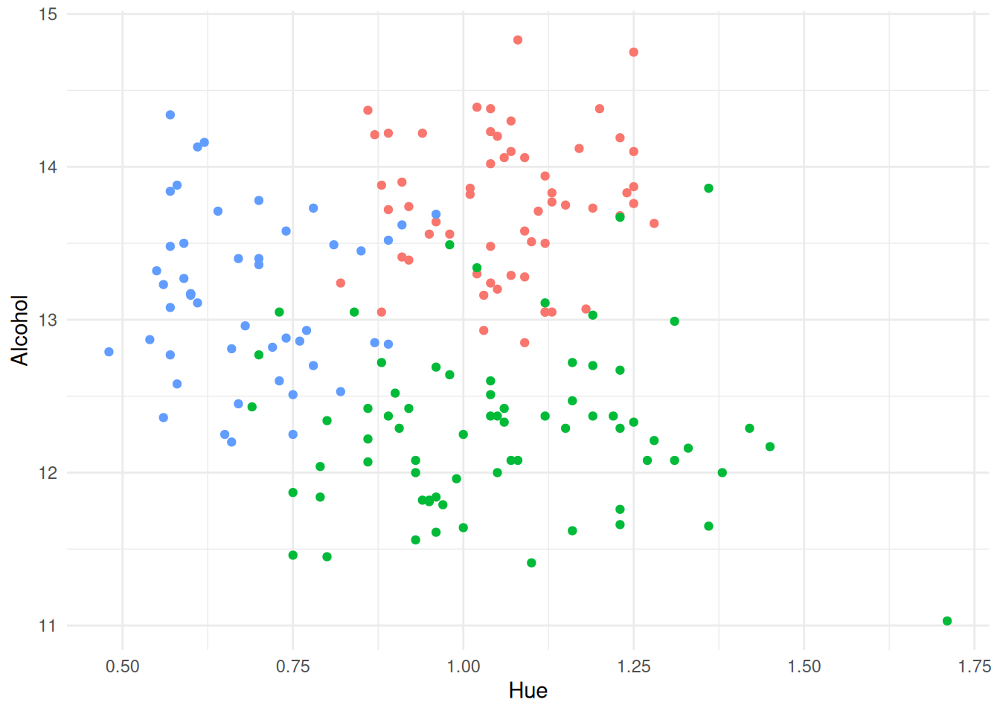
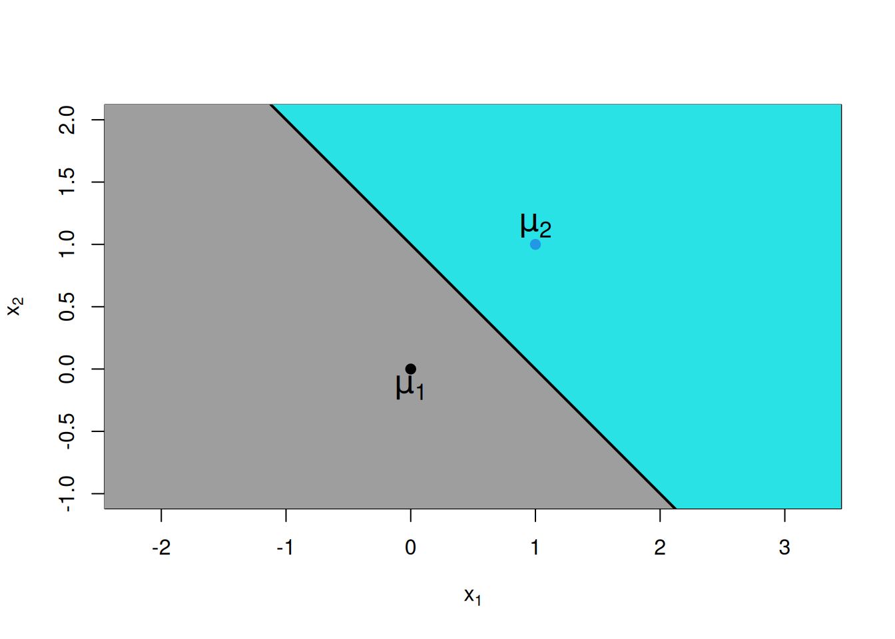
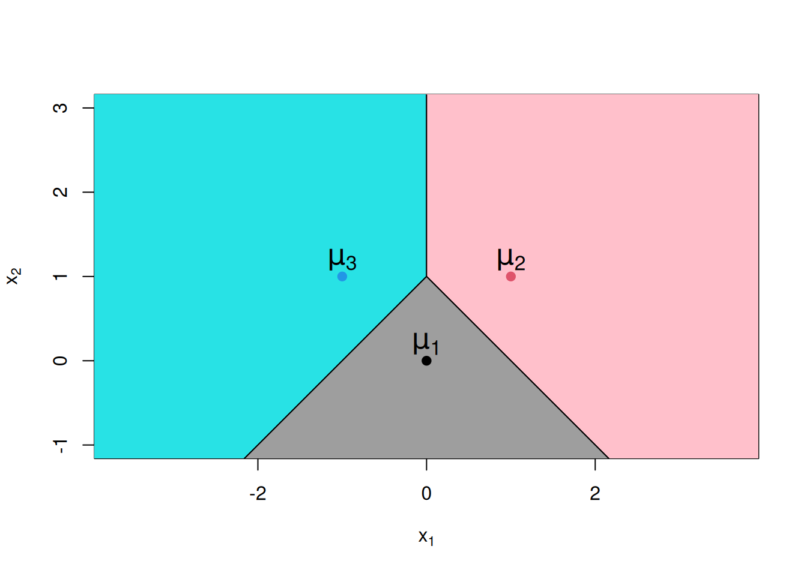
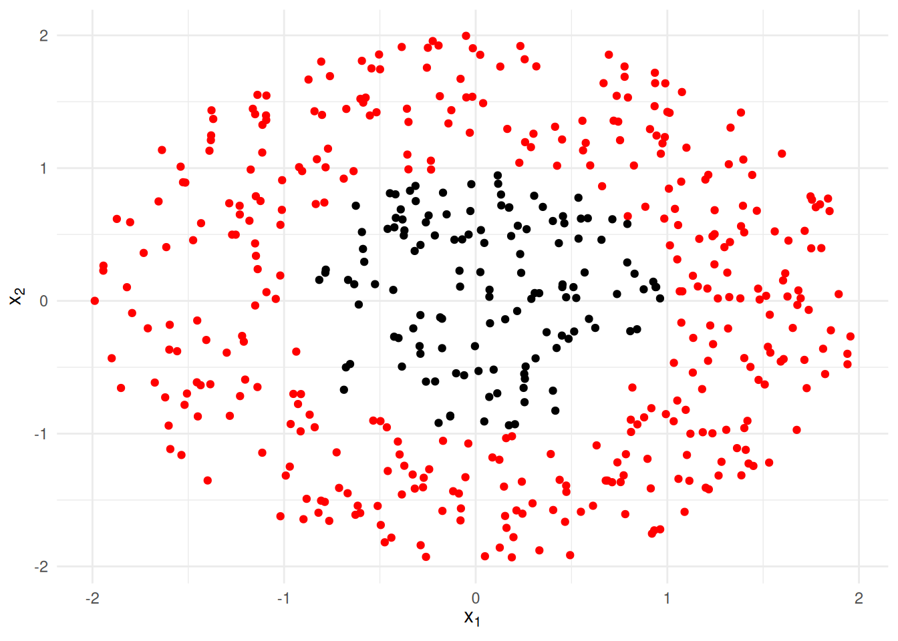
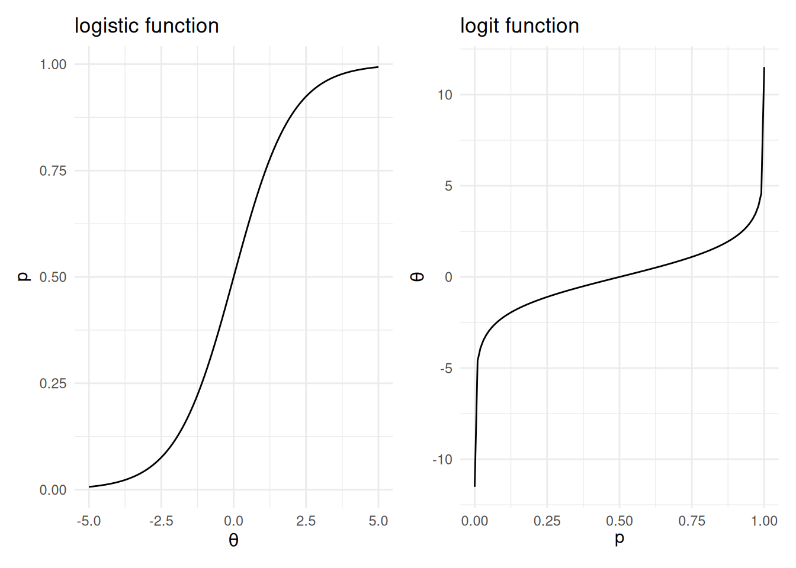
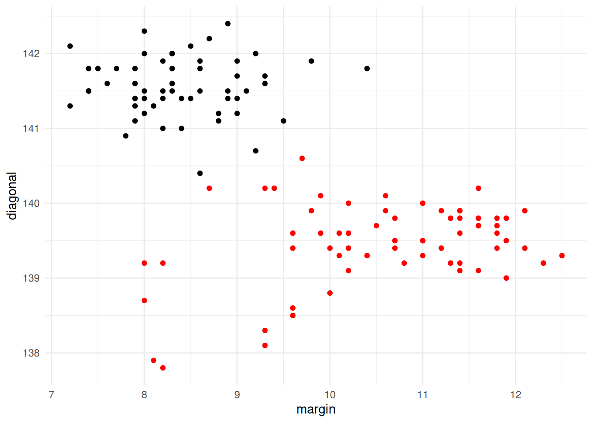
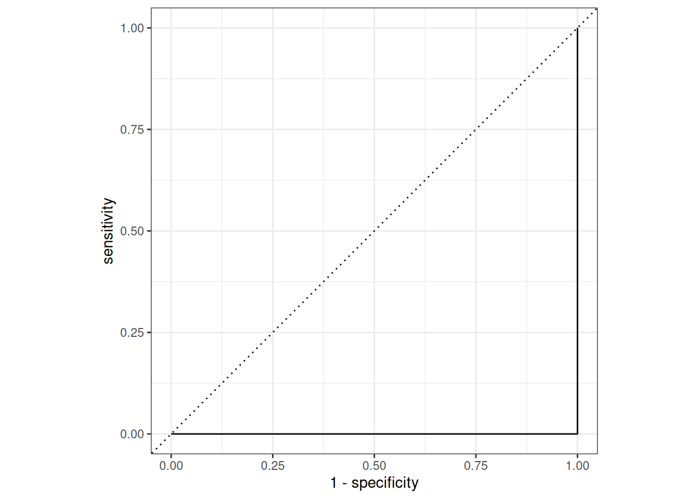
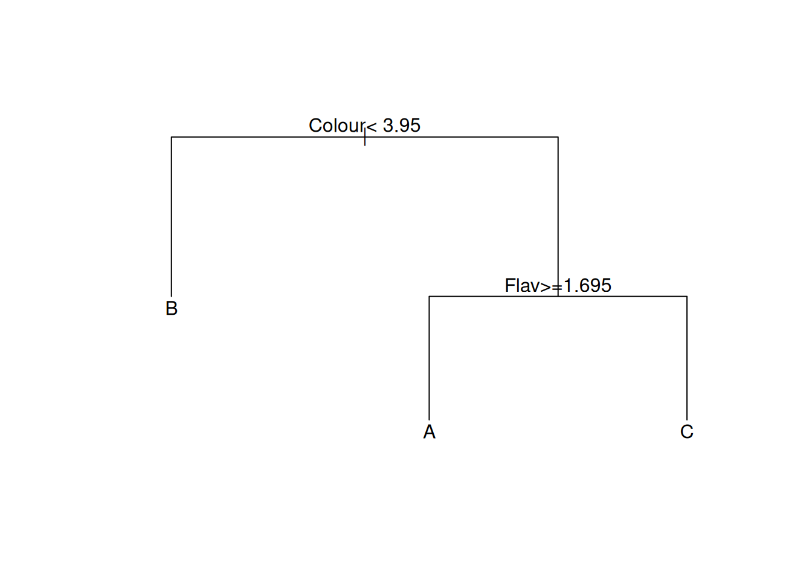

Chapter 6 Classification
6.1 Introduction to Classification
In classification, our goal is to assign each observation in the test dataset to one of a number of pre-specified categories. We do so using information from the observed predictor variables (or ‘features’), based on a classification rule derived using the training data. Applications of classification analysis are manifold, ranging from biological taxonomy (the assignment organisms to species) to diagnosis of disease, to the assessment of credit risk.
As with the prediction problem, in practice we will have training and test datasets. For the training data we will have a record of both the features and the true class membership for each case. The training data can then be used to create a method for linking class membership to the features. In the test data we will have just the features. We can then apply the classification method developed on the training data to allocate each test case to a group.
As we did when discussing prediction, we will at times look at validation datasets (i.e. artificial test datasets) in which the true class memberships are available. This is for illustrative purposes, helping us to compare and contrast various classification technique.
How this chapter connects. This chapter focuses on the main classification methods and the ideas behind them. When we want a more reproducible implementation path with recipes, workflows, resampling, and tuning, Chapter 5 is the place to look. The comparison table in Section 1.4.1 is also a useful reminder of how classification differs from prediction, clustering, and association rules.
As an example of a classification problem, recall the Italian wine data that we met in Exercise 1 of Laboratory 4. Thinking of this as a training dataset, we display in Figure 6.1 a scatterplot of the percentage alcohol content of the wine against its hue, with the data plotted using different colour plotting symbols for each of the three cultivars. These three groups are quite well separated on just the plotted variables, suggesting that we should be able to derive a classification method with a high degree of accuracy when using information from all the variables.

Figure 6.1: Plot of percentage alcohol content against hue for a sample of Italian wines. The coloured plotting symbols distinguish the three different cultivars for the wines.
If we think of class membership as being defined by a categorical target variable, then this mirrors the prediction problem studied except for the nature of the target. It should therefore be no surprise that some of the techniques that we met in the context of prediction can also be applied to the classification problem with only minor modifications. Tree-based methods and neural networks are two prime examples that will be considered in this chapter. We shall also a examine some specialized methods for classification, including logistic regression, linear discriminant analysis, kernel discriminant analysis and naive Bayes classifiers49.
In general, no classification method is likely to be 100% accurate. This is because there will always be inherent uncertainty on class membership based upon the observed features. For example, suppose that we try to classify human sex based on height and weight. A person of 185cm and 85kg is likely to be male, but is not certain to be so. The best we can do is to try and evaluate classification probabilities. These are the probabilities of membership of the possible classes given the observed features: \({\textsf P}(\mbox{class} | \mbox{features})\).
We will usually assign each test case to the class with highest classification probability. However, this is not always the case, since in some situations there are differing costs associated between different types of mistake. For example, consider a dermatologist classifying each skin lesion as benign or malignant. Mistakenly classifying a lesion that is benign to the malignant class will result in unnecessary treatment, but that is a less critical error than classifying a malignant lesion as benign, when the delay in treatment might be fatal. As a consequence, a dermatologist may act as if a lesion is malignant (for example, by excising it) even if \({\textsf P}(\mbox{malignant} | \mbox{features}) = 0.1\).
Our broad approach to classification must be to estimate the classification probabilities. There are two ways in which we might do this: generational and discriminatory. Discriminatory (or conditional) methods seek to estimate the classification probabilities directly. Generational methods compute the classification problems by first estimating related quantities, following a statistical theory for classification which we now discuss.
6.1.1 Statistical Theory for Classification
In classification we assume that each observation belongs to one of a finite number of classes, which we will label \(1, 2, \ldots, C\). We will make each classification based on the observed vector \(\boldsymbol{x}= (x_1, x_2, \ldots, x_p)\) of variables (features). Let the joint probability function50 of \(\boldsymbol{x}\) for individuals in class \(j\) be denoted by \(f_j\).
Now, suppose that we have some prior ideas about the probabilities of each class; denote these by \(\pi_1, \ldots, \pi_C\). If the training data are a random sample then we can use the relative proportions to provide these prior probabilities – that is, \(\pi_j = n_j/n\) where \(n_j\) is the number of training observations in class \(j\), and \(n\) is the total number of training observations. This is the default method of estimating the priors for most classifiers implemented in R. In other situations we might have exogenous information about the class probabilities. Sometimes we will have no useful information, when the best course may be to simply set them equal: \(\pi_j = 1/C\) for all \(j=1,\ldots,C\).
Suppose for now that the probability functions \(f_1, \ldots, f_C\) and prior probabilities are all known. We observe an individual with feature vector \(\boldsymbol{x}\). Which class is this individual most likely to belong to? To answer this, we must compute the conditional probabilities \({\textsf P}(j | \boldsymbol{x})\) for \(j=1,\ldots,C\). The quantity \({\textsf P}(j | \boldsymbol{x})\) is the probability that the individual belongs to class \(j\) given that they have feature vector \(\boldsymbol{x}\). Now, by Bayes’ Theorem51 we have \[\begin{equation} {\textsf P}(j | \boldsymbol{x}) = \frac{ \pi_j f_j(\boldsymbol{x}) }{f(\boldsymbol{x})}~~~~~~~~~~(j=1,\ldots,C) \tag{6.1} \end{equation}\] where \(f(\boldsymbol{x}) = \sum_j \pi_j f_j(\boldsymbol{x})\). Because the denominator on the right-hand side of Equation (6.1) does not depend upon the class \(j\), it follows that the most probable class is the one for which \(\pi_j f_j(\boldsymbol{x})\) is largest.
Example 6.1 Some Bayesian Reassurance for a Hypochondriac
A nervous patient has a set of blood test results \(\boldsymbol{x}\). He surfs the Internet, and finds that the probability that a normal healthy individual will return such results is \(0.01\), but that for people with Erdheim-Chester disease such test results would be reasonably common, appearing with probability \(0.5\). However, his GP (an avid Bayesian!) seems very unconcerned. She notes that this is a classification problem with two categories: diseased (class 1) and non-diseased (class 2). It is well known that Erdheim-Chester disease is a very rare condition, so that \(\pi_1 = 0.000001\) (i.e. 1 in a million), and hence \(\pi_2 = 1 - \pi_1 = 0.999999\). From the test results the GP knows that \(f_1(\boldsymbol{x}) = 0.5\) and \(f_2(\boldsymbol{x}) = 0.01\), but she computes the conditional probability of being diseased given the test results as \[{\textsf P}(1 | \boldsymbol{x}) = \frac{ 0.000001 \times 0.5 }{0.000001 \times 0.5 + 0.999999 \times 0.01} \approx 0.00005.\] It is extremely unlikely that the patient’s worries are well founded.
6.1.2 Misclassification Rates and Confusion Matrices
In order to implement classification based on the posterior probabilities in Equation (6.1) we need the prior probabilities \(\pi_j\) and the probability functions \(f_j\) for all classes \(j=1,\ldots,C\). Obtaining values for \(\pi_1,\ldots,\pi_C\) will not usually be a problem, as discussed above. The challenge is to obtain estimates of \(f_1,\ldots,f_C\) from the training data. We shall examine a number of options.
Assume that \(f_1,\ldots,f_C\) are normal probability density functions (for continuous random variables). This leads to the method of linear discriminant analysis (Section 6.2).
Estimate \(f_1,\ldots,f_C\) using kernel density estimation. This leads to the method of kernel discriminant analysis (Section 6.3).
Factorize the joint probability functions to facilitate their estimation, leading to naive Bayesian classification (Section 6.4).
Given this variety of methods, as well as the more generic tree-based and neural network classifiers, which should we prefer? We will usually want to select the method with the lowest misclassification rate. The misclassification rate is simply the proportion of observations that are assigned to the wrong class. A more detailed analysis of the performance of each classifier can be obtained from the error matrix or confusion matrix, which cross-tabulates true and predicted classes. In some cases the impact of certain types of misclassification may be far greater than others, in which case one my wish to consider a weighted error rate. This can occur, for example, in medical testing, where the consequences of false positives may be somewhat unpleasant (e.g. unnecessary biopsies) but the consequence of false negatives can be fatal (e.g. failure to detect a disease while it is still treatable).
Example 6.2 Comparison of Tests for Tuberculosis
The Mantoux and Heaf tests are both used to detect tuberculosis in patients. Suppose that they are each applied to 1000 subjects suspected of having the disease, giving the following confusion tables. Note that disease status is the true class here (positive or negative for tuberculosis) and the test result (positive or negative) is the predicted class.
|
|
The overall misclassification rate for the Mantoux test is \(51/1000 = 5.1\%\), while the over misclassification rate for the Heaf test is \(41/1000 = 4.1\%\). However, if we assign severity weights 1 to false positives and 10 to false negatives, then the weighed error is \((50+1 \times 10)/1000 = 0.06\) for the Mantoux test, which is rather better than the figure of \((30+11\times 10)/1000 = 0.14\) for the Heaf test.
In practice we will need to estimate the misclassification rate for each classifier that we use. Recall from the previous chapter that assessing predictive accuracy (in terms of mean squared error) based on predictions on the training data led to an overly optimistic assessment. The methods enjoyed ‘home ground advantage’. The same issue applies in classification. If we develop a classification rule on the training data, then it will tend to perform especially well on those data, and in particular better than it would on real test data. We therefore need a more independent method for estimation misclassification rates.
If we have an independent validation dataset for which the correct class assignments are know, then misclassification rates can be assessed based on performance thereon. As we saw previously, this could be achieve by splitting the original training dataset into a smaller (new) training set and a separate validation set, typically in a ratio of around 3:1. Alternatively, we can employ cross-validation techniques, following along the same lines as in Section 4.4.5 (but with the squared error performance measure replaced by the misclassification rate).
6.2 Linear Discriminant Analysis
6.2.1 The Method in Theory
Linear discriminant analysis (often abbreviated to LDA) is applicable when all the features are quantitative. The method relies critically on the assumption that that the joint distributions of the features is multivariate normal, with a covariance matrix that is the same from class to class. The thing which distinguishes the groups is inter-class variation of the vector of feature means.
Consider a very simply case where there are just \(C=2\) classes, and just \(p=2\) numerical features, \(x_1\) and \(x_2\). Suppose that these features are statistically independent, and that the standard deviation of each is equal to one (irrespective of class). Finally, let both features have mean zero in group 1, and let both features have mean 1 in group 2. In other words, if \(\mu_{ij}\) is the mean for feature \(i\) in group \(j\) then \(\mu_{11} = \mu_{21} = 0\), and \(\mu_{12} = \mu_{22} = 1\). Now, using standard results for the multivariate normal distribution52, we have \[\begin{aligned} f_j(\boldsymbol{x}) &= \frac{1}{2 \pi} \exp \left \{ -\frac {(x_1 - \mu_{1j})^2}{2} \right \} \exp \left \{ -\frac{(x_2 - \mu_{2j})^2}{2} \right \}\\ &= \left \{ \begin{array}{ll} \frac{1}{2 \pi} \exp \left \{ -\frac{x_1^2}{2} - \frac{x_2^2}{2} \right \} & \mbox{for class $j=1$}\\ \frac{1}{2 \pi} \exp \left \{ -\frac{(x_1-1)^2}{2} - \frac{(x_2-1)^2}{2} \right \} & \mbox{for class $j=2$} \end{array} \right .\end{aligned}\] If the prior class probabilities are equal (i.e. \(\pi_1 = \pi_2 = 0.5\)) then we will assign an observation \(\boldsymbol{x}= (x_1, x_2)\) to class \(1\) if and only if \[\begin{aligned} f_1(\boldsymbol{x}) &> f_2(\boldsymbol{x}) \\ \Rightarrow\quad \exp\{ (-x_1^2/2 - x_2^2/2)\} &> \exp\{ (-(x_1-1)^2/2 - (x_2-1)^2/2)\} \\ \Rightarrow\quad -x_1^2/2 - x_2^2/2 &> -(x_1-1)^2/2 - (x_2-1)^2/2 \\ \Rightarrow\quad x_1^2 + x_2^2 &< x_1^2 - 2 x_1 + 1 + x_2^2 - 2 x_2 +1 \\ \Rightarrow\quad 0 &< - 2 x_1 + 1 - 2 x_2 +1 \\ \Rightarrow\quad x_1 + x_2 &< 1\\\end{aligned}\] Time to take stock. We have just shown that given an observation \((x_1,x_2)\), we should assign it to class 1 if \(x_1 + x_2 < 1\), and to class 2 if \(x_1 + x_2 \ge 1\). (In theory the possibility of equality can be ignored, because for truly continuous data we will get precise equality with probability zero.) In other words, \(x_1 + x_2 < 1\) is a decision rule that tell us where to classify the observation (class 1 if true, class 2 if false). This can be plotted graphically, as in Figure 6.2. Notice that the boundary of the regions is given by the straight line \(x_1 + x_2 = 1\), hence the nomenclature linear discriminant analysis. The combination \(x_1 + x_2\) is referred to as a linear discriminant or a discriminant variable because of its role in defining the decision rule.

Figure 6.2: Plot of decision regions for a linear discriminant analysis with two groups. Any observation in the grey region will be assigned to class 1; any observation in the cyan region will be assigned to class 2.
The result is very intuitive. Each of observation will be assigned to the class for which the mean is closest. While we have demonstrated this result for two class problems, it extends naturally to cases with three or more classes. In such situations the feature space will be divided into multiple regions using line segment boundaries. See Figure 6.3 for example. If there are more than two features then the boundaries of the decision regions will be a defined by the intersection of hyperplanes rather than lines.

Figure 6.3: Plot of decision regions for a linear discriminant analysis with three groups.
6.2.2 Implementation in R
Linear discriminant analysis can be implemented in R using the lda
function. This is part of the MASS library, which must be pre-loaded.
The syntax for lda is of the following form:
Here y in the formula is the true class, and x1 and x2 are
features. The argument data allows specification of a data frame in
the usual manner. The optional argument CV is logical, indicating
whether or not a cross-validation estimate of the posterior
probabilities \(\{{\textsf P}(j | \boldsymbol{x}) \}\) is required. The
default is CV=FALSE. Finally, prior probabilities can be specified as a
vector valued argument prior. The default is to use the class
proportions in the data.
Predicted classes from an LDA model are obtained by the predict
function in the usual kind of way.
While this is relatively consistent with what we’ve seen in the past,
we’ll be utilising the tidymodels framework instead, using parsnip
with the discrim_linear() function. We can then use the yardstick
to evaluate performance.
Example 6.3 Prediction for the Wine Data Using LDA
We start by splitting the wine data into training and test data (which
we shall refer to throughout this chapter). The wine data is in truth
a relatively straightforward one for classification, so we make things a
little more challenging by leaving only 100 observations in the training
set (with the remaining 78 in the validation dataset). These operations
are performed in the R code below, where we
first convert the target variable Cultivar to a factor.
library(rsample)
wine <- read_csv("../data/wine.csv") |>
mutate(Cultivar = factor(Cultivar))
set.seed(2021)
split <- initial_split(wine, prop=100/178)
wine.train <- training(split)
wine.test <- testing(split)
wine.train#> # A tibble: 100 × 14
#> Cultivar Alcohol Malic Ash Alc.Ash Mg Phenols Flav Non.Flav Proan
#> <fct> <dbl> <dbl> <dbl> <dbl> <dbl> <dbl> <dbl> <dbl> <dbl>
#> 1 C 12.51 1.24 2.25 17.5 85 2 0.58 0.6 1.25
#> 2 C 13.73 4.36 2.26 22.5 88 1.28 0.47 0.52 1.15
#> 3 C 13.71 5.65 2.45 20.5 95 1.68 0.61 0.52 1.06
#> 4 C 12.84 2.96 2.61 24 101 2.32 0.6 0.53 0.81
#> 5 B 12.21 1.19 1.75 16.8 151 1.85 1.28 0.14 2.5
#> 6 C 13.17 2.59 2.37 20 120 1.65 0.68 0.53 1.46
#> 7 B 12.6 1.34 1.9 18.5 88 1.45 1.36 0.29 1.35
#> 8 B 11.61 1.35 2.7 20 94 2.74 2.92 0.29 2.49
#> 9 B 13.34 0.94 2.36 17 110 2.53 1.3 0.55 0.42
#> 10 B 12.34 2.45 2.46 21 98 2.56 2.11 0.34 1.31
#> # ℹ 90 more rows
#> # ℹ 4 more variables: Colour <dbl>, Hue <dbl>, ODRatio <dbl>, Proline <dbl>We initially consider prediction with LDA using all the variables.
library(discrim)
library(yardstick)
wine.lda1 <- discrim_linear() |> fit(Cultivar ~ ., data=wine.train)
wine.lda1#> parsnip model object
#>
#> Call:
#> lda(Cultivar ~ ., data = data)
#>
#> Prior probabilities of groups:
#> A B C
#> 0.27 0.40 0.33
#>
#> Group means:
#> Alcohol Malic Ash Alc.Ash Mg Phenols Flav Non.Flav
#> A 13.72333 1.977407 2.509630 17.52593 105.96296 2.831111 3.0022222 0.2981481
#> B 12.24400 2.103250 2.229750 20.07250 95.50000 2.262500 2.0822500 0.3525000
#> C 13.11576 3.340909 2.418788 21.28788 99.54545 1.688182 0.7481818 0.4542424
#> Proan Colour Hue ODRatio Proline
#> A 1.826296 5.444444 1.0566667 3.162593 1079.6296
#> B 1.690500 2.924250 1.0540000 2.922000 521.7750
#> C 1.136061 7.250606 0.6809091 1.709697 626.5152
#>
#> Coefficients of linear discriminants:
#> LD1 LD2
#> Alcohol -0.010317451 1.175068679
#> Malic 0.182260164 0.104519875
#> Ash 0.138964990 2.573625788
#> Alc.Ash 0.038864464 -0.160828615
#> Mg -0.003958634 0.004833826
#> Phenols 0.767868607 -0.086488945
#> Flav -2.569432136 0.050198155
#> Non.Flav -2.044924752 -0.504567571
#> Proan 0.358496497 -0.403501573
#> Colour 0.298461150 0.132267168
#> Hue -1.850873874 -1.976866286
#> ODRatio -1.288883722 0.078974327
#> Proline -0.001686943 0.002915649
#>
#> Proportion of trace:
#> LD1 LD2
#> 0.7512 0.2488wine.lda1.pred <- wine.lda1 |> augment(new_data=wine.test)
wine.lda1.pred |>
conf_mat(truth=Cultivar, estimate=.pred_class)#> Truth
#> Prediction A B C
#> A 32 1 0
#> B 0 28 0
#> C 0 2 15Note the following:
We have first loaded the
discrimlibrary, an add-on package forparsnip, in order to access thediscrim_linearfunction.The dot on the right-hand side of a model formula has the usual meaning (of all variables in the data frame barring the response on the left-hand side).
The fit object
wine.lda1is a parsnip model which then prints the output fromlda(). Much of the resulting output is self explanatory. We note that the table of coefficients of the linear discriminants is a matrix which transforms standardized versions of the original observations to the linear discriminants.We use
augment()to add the.pred_class,.pred_A,.pred_Band.pred_Ccolumns to thewine.testdata. The first of these are the “hard” class predictions (based on maximum posterior probabilities) while the last 3 are the aforementioned posterior probabilities.The
yardstickfunctionconf_mattabulates the predicted classes against the true classes; i.e. the confusion matrix. We see that the overall misclassification rate is \(3/78 \approx 3.8\%\).
We now consider trying to perform LDA using just the variables
Alcohol, Color and Hue.
wine.lda2 <- discrim_linear() |> fit(Cultivar ~ Alcohol + Colour + Hue, data=wine.train)
wine.lda2.pred <- wine.lda2 |> augment(new_data=wine.test)
wine.lda2.pred |> conf_mat(truth=Cultivar, estimate=.pred_class)#> Truth
#> Prediction A B C
#> A 30 3 1
#> B 2 27 1
#> C 0 1 13We get a worse misclassification rate in this case: \(8/78 \approx 10.3\%\). Nonetheless, we used many less variables to develop the classification model. The question remains, might we improve on the initial (full) model by omitting some of the variables? This is another instance of a bias-variance trade-off. In principle we could perform some kind of variable selection algorithm to address this matter, but it turns out that there are better ‘dimension reducing’ approaches (though these are beyond the scope of this paper).
Finally, we have used the training sample relative frequencies to define
the prior probabilities in both of these LDA classifiers. As you will
see from the output for wine.lda1, this gave
\((\pi_1,\pi_2,\pi_3) = (0.27, 0.4, 0.33)\). We can instead specify our
own prior probabilities through the prior argument to lda(). For
example, suppose that we thought that in practice all three cultivars
are equally prevalent. Then we could perform classification using the
prior \((\pi_1,\pi_2,\pi_3) = (1/3, 1/3, 1/3)\) instead. To pass the prior
information through from discrim_linear() we would use the set_engine()
function:
Note that we wouldn’t expect the classifications to change much as the prior is only a little different.
6.3 Kernel Discriminant Analysis
While linear discriminant analysis can work well in many applications, it can also fail spectacularly when the boundaries between the groups are highly non-linear. Consider, for instance, the (artificial) data set displayed in Figure 6.4. The separation between the red and black observations is clear to the eye, but linear discriminant analysis cannot handle such a scenario.

Figure 6.4: An artificial dataset for which linear discriminant analysis will completely fail.
A (far) more flexible approach than LDA is to estimate the probability functions \(f_1,\ldots,f_C\) using kernel density estimation.
Recall that kernel density estimation in one dimension is where we estimate a distribution \(f\) using the mean of kernel functions (typically guassian) centered at each observation.
\[ \hat{f}(x) = \frac{1}{n}\sum_{i=1}^n \frac{1}{h}K(\frac{x - x_i}{h}). \]
Here, \(h\) is the bandwidth of the kernel density estimator, which essentially controls the amount of smoothing: a small value of \(h\) will result in a noisy distribution, while a large value of \(h\) will result in something that may be overly smooth and miss fine detail.
We can extend this concept readily to higher dimensions, though the bandwidth \(h\) is replaced by a square matrix of bandwidths of size \(d\) if the dimension is \(d\).
In the case where we have continuous predictor variables, we can use the training data from each class to construct kernel estimates \(\hat f_1, \ldots, \hat f_C\). Substituting these estimates in Equation (6.1) leads to kernel discriminant analysis.
While kernel discriminant analysis wins over LDA in terms of flexibility, the method can be somewhat unreliable when there are large numbers of predictor variables. Indeed, kernel density estimation will typically prove difficult in more than 3 dimensions, unless there are very large numbers of observations available.
Kernel discriminant analysis is implemented in R using the kda
function within the ks library. To keep things consistent, we will
use the tidykda package53 which implements a wrapper to coerce kernel
discriminant analysis into the parsnip framework.
The bandwidths are automatically found using a plugin-estimator, so
all we need to do is provide at most 3 predictors and utilise
the discrim_kernel() function. This can take some time to run for large datasets.
Example 6.4 Kernel Discriminant Analysis for the Wine Data
We apply kernel discriminant analysis to the Italian wine data.
Specifically, we attempt to classify Cultivar based on the three
predictors Alcohol, Colour and Hue.
library(tidykda)
wine.kda <- discrim_kernel() |> fit(Cultivar ~ Alcohol + Colour + Hue, data=wine.train)
wine.kda.pred <- wine.kda |> augment(new_data=wine.test)
wine.kda.pred |> conf_mat(truth=Cultivar, estimate=.pred_class)#> Truth
#> Prediction A B C
#> A 29 6 2
#> B 0 23 0
#> C 3 2 13Points to note:
We use only 3 predictors, as this is the most that
discrim_kernelwill accept.The error rate using kernel discriminant analysis is \(13/78 \approx 16.7\%\). This is worse than we obtained using LDA. Hence, while linear boundaries may not be entirely satisfactory for distinguishing between classes, the errors thus arising are of a little less importance than those due to the extra complexity inherent in the kernel approach for this example.
6.4 Naive Bayes Classifiers
As we noted above, kernel discriminant analysis does not usually work at all well when there are many predictor variables. Indeed, the R implementation of the method can cope with no more than \(p=6\). This is a reflection of the curse of dimensionality, which in essence states that many statistical estimation problems become much more difficult in high dimensions.
This idea can be illustrated most easily if we consider the situation in which the predictor variables are categorical. Specifically, imagine that we have \(p=10\) factors, each on 3 levels. To specify \(f_j(\boldsymbol{x})\) we must compute the probability for any combination the factors. However, there are \(3^{10} = 59049\) different combinations. That’s a lot! Even if we had a large training set with \(10000\) observations per class, it would still be the case that we would have no training observations for more than \(86\%\) of the possible factorial combinations. How then can we hope to estimate the probabilities thereof?
In naive Bayes classification this problem is addressed by making the assumption that all the predictors are statistical independent within each class. This means that we can factorize the probability functions by \[\begin{equation} f_j(\boldsymbol{x}) = f_j(x_1) f_j(x_2) \cdots f_j(x_p) \tag{6.2} \end{equation}\] where \(f_j(x_i)\) denotes the marginal probability function for predictor \(x_i\) in class \(j\). To appreciate the extent to which this simplifies the problem, let us return to out example with 10 predictive factors each with 3 levels. In order to estimate the marginal probability distribution for any single factor we need only estimate 2 probabilities54. This in turn means that we need only estimate \(10\times 2=20\) probabilities in total to fully specify the probability function in Equation (6.2).
Example 6.5 Coke or Pepsi?
A sample of 100 people are questioned as to whether they prefer Coke or Pepsi (the target classification). A total of 60 prefer Coke and 40 prefer Pepsi. The predictive factors are sex and age category (younger than 20, or 20 and older) of person. The following results were recorded.
|
|
To specify the probability distribution \(f_1\) for coke drinkers we must compute probabilities for each combination of predictive factors. We can do so using the observed proportions. Under the full Bayesian model we have \[\hat f_1(\{Male,Older\}) = \tfrac{10}{60} = \tfrac{1}{6}\] for example. Using naive Bayes on the other hand, we obtain \[\hat f_1(\{Male,Older\}) \approx \hat f_1(Male) \hat f_1(Older) = \tfrac{30}{60} \times \tfrac{30}{60} = \tfrac{1}{4}.\]
Naturally there is a price to pay for such a huge reduction in model complexity. The assumption of independence of predictors within each class is strong, and will almost certainly be incorrect in practice. Nonetheless, such a simplification may still be a good idea, based on the kind of bias-variance trade off arguments with which you should now be familiar.
Naive Bayes classification in R is implemented in a range of different packages,
such as the e1071 package (with function naiveBayes()), the naivebayes
package (with function naivebayes()) and the klaR package (with function NaiveBayes()).
As before, we will be using the tidymodels framework, where discrim provides
the model tidier naive_Bayes(). We’ll utilise the naivebayes engine.
Predictions will then be made in the same way
(i.e. using predict() or augment()).
The implementation of the naive Bayes classifier can take both quantitative and categorical predictors. The marginal distributions (i.e. the \(f_j(x_i)\) mentioned above) for the numerical variables are estimated using kernel density estimators (or, alternatively univariate normal distributions), while marginal probabilities for the categorical variables are estimated using class-specific proportions.
Example 6.6 Naive Bayes Classification for the Wine Data
We apply naive Bayes classification to the Italian wine data, first
using all the predictor variables and then using just Alcohol,
Colour and Hue. Lastly, we’ll use a normal distribution in place
of the kernel density estimates.
spec_nB <- naive_Bayes(engine="naivebayes")
wine.nB.1 <- spec_nB |>
fit(Cultivar ~ ., data=wine.train)
wine.nB.1.pred <- wine.nB.1 |>
augment(new_data=wine.test)
wine.nB.1.pred |>
conf_mat(truth=Cultivar, estimate=.pred_class)#> Truth
#> Prediction A B C
#> A 30 2 0
#> B 2 26 0
#> C 0 3 15wine.nB.2 <- spec_nB |>
fit(Cultivar ~ Alcohol + Colour + Hue, data=wine.train)
wine.nB.2.pred <- wine.nB.2 |>
augment(new_data=wine.test)
wine.nB.2.pred |>
conf_mat(truth=Cultivar, estimate=.pred_class)#> Truth
#> Prediction A B C
#> A 32 4 1
#> B 0 25 1
#> C 0 2 13wine.nB.3 <- spec_nB |>
set_engine(engine="naivebayes", usekernel=FALSE) |>
fit(Cultivar ~ Alcohol + Colour + Hue, data=wine.train)
wine.nB.3#> parsnip model object
#>
#>
#> ================================= Naive Bayes ==================================
#>
#> Call:
#> naive_bayes.default(x = maybe_data_frame(x), y = y, usekernel = ~FALSE)
#>
#> --------------------------------------------------------------------------------
#>
#> Laplace smoothing: 0
#>
#> --------------------------------------------------------------------------------
#>
#> A priori probabilities:
#>
#> A B C
#> 0.27 0.40 0.33
#>
#> --------------------------------------------------------------------------------
#>
#> Tables:
#>
#> --------------------------------------------------------------------------------
#> :: Alcohol (Gaussian)
#> --------------------------------------------------------------------------------
#>
#> Alcohol A B C
#> mean 13.7233333 12.2440000 13.1157576
#> sd 0.4691646 0.4963188 0.5086258
#>
#> --------------------------------------------------------------------------------
#> :: Colour (Gaussian)
#> --------------------------------------------------------------------------------
#>
#> Colour A B C
#> mean 5.4444444 2.9242500 7.2506060
#> sd 1.1854546 0.7474191 2.1912438
#>
#> --------------------------------------------------------------------------------
#> :: Hue (Gaussian)
#> --------------------------------------------------------------------------------
#>
#> Hue A B C
#> mean 1.0566667 1.0540000 0.6809091
#> sd 0.1271885 0.1816562 0.1231961
#>
#> --------------------------------------------------------------------------------wine.nB.3.pred <- wine.nB.3 |>
augment(new_data=wine.test)
wine.nB.3.pred |>
conf_mat(truth=Cultivar, estimate=.pred_class)#> Truth
#> Prediction A B C
#> A 30 4 1
#> B 2 24 1
#> C 0 3 13Points to note:
The output for the fitted objects (e.g.
wine.nB.3) aren’t strongly useful. There are tables per predictor with a summary of the model fit - kernel densities or the mean/sd of the normal distributions as seen forwine.nB.3.The naive Bayes classifier implement with all predictors has an error rate of \(7/78 \approx 9\%\). With just the predictors
Alcohol,ColourandHuethis rises to \(8/78 \approx 10.3\%\). Using normal distributions rather than kernel densities for the marginal distributions is worse again, at \(11/78 \approx 14.1\%\)
6.5 Logistic regression
Logistic regression is a type of discriminatory classifier. This, along with the other methods of classification in the next section, attempt to learn the probability \(P(j|\boldsymbol{x})\) directly, rather than generating it from the joint probability function within each class and prior probabilities via Bayes’ Theorem.
Logistic regression learns \(P(j|\boldsymbol{x})\) directly by assuming a parameteric form for the probability. It is one of a class of methods known as generalised linear models (GLMs), and is thus closely related to linear regression. The generalisation involved is that the distribution of the response variable \(y\) need not be a normal distribution. In particular, logistic regression is primarily concerned with a binary (i.e. 0 and 1) response variable, whose expected value will be the probability of a response \(y=1\). Thus, it is useful for classifying data into two groups, which we can associate with the two outcomes – say \(y=0\) codes for group 1, and \(y=1\) for group 2. Extensions to more than two groups will be given in section 6.5.3.
It is linear in the sense that a transformation links a linear combination of predictors \[\theta(\boldsymbol{x}) = \beta_0 + \beta_1 x_1 + \cdots + \beta_p x_p,\] with the probability \(p(\boldsymbol{x}) = {\textsf P}(y=1 | \boldsymbol{x})\)55. This transformation is the sigmoid function56, also known as the logistic function: \[p(\boldsymbol{x}) = \frac{1}{1+e^{-\theta(\boldsymbol{x})}}.\] The logistic function ensures that the expected outcome is between 0 and 1, see the left-hand panel of Figure 6.5.

Figure 6.5: The logistic and logit functions.
The inverse of the logistic function is the logit function \[\theta(\boldsymbol{x}) = {\textsf {logit}}(p(\boldsymbol{x})) = \log\left(\frac{p(\boldsymbol{x})}{1-p(\boldsymbol{x})}\right).\] See the right-hand panel of Figure 6.5. The logit may also be interpreted as the log odds, where the odds are defined as \(\tfrac{p(\boldsymbol{x})}{1-p(\boldsymbol{x})}\). Odds are an alternate scale for interpreting the chance of something happening. Rather than writing the probability of it occurring, we instead give a ratio of the probability that it occurs to the probability that it does not occur. As an example, the odds of something that occurs twice in five are 2:3 – you expect it to occur twice for every 3 times it does not occur. Notice that, while proportions are restricted between 0 and 1, the odds may take any positive number, and hence the log odds may take any real number. This makes the log odds appropriate for a linear combination of predictors which, if we allow any possible values for the predictors, will also produce all real numbers.
The formulation of logistic regression is therefore: \[\begin{aligned} y_i &\sim \mathsf{Bernoulli}(p(\boldsymbol{x}_i))\\ {\textsf {logit}}(p(\boldsymbol{x}_i)) &= \beta_0 + \beta_1x_{i1} + \cdots+ \beta_p{x_ik}.\end{aligned}\] where
\(y_i\) is the binary outcome for observation \(i\);
\(\boldsymbol{x}_i = (x_{i1}, \ldots, x_{ip})^\mathsf{T}\) is the vector of predictor variables for the \(i\)th observation;
\(p(\boldsymbol{x}_i) = {\textsf P}(y_i = 1 | \boldsymbol{x}_i)\);
\(\beta_1, \ldots, \beta_p\) are unknown regression coefficients.
Note that, as with linear regression, we can use either quantitative variables or factors as predictors. When factors are used, we code them as 0/1 dummy variables in the same way as is done for linear regression.
There is then a natural way of interpreting the fitted coefficients for factors in terms of odds. Suppose we have a factor with one of its levels is coded as the binary variable \(x_1\), and let \(x_2, \ldots, x_p\) be other predictors (including any other levels of the factor). Then if \(x_1\) is a 1, the log odds will be given by \[{\textsf {logit}}(p(\boldsymbol{x})) = \beta_0 + \beta_1 + \sum_{j=2}^p \beta_j x_j.\] If \(x_1\) is a 0, the log odds is given by \[{\textsf {logit}}(p(\boldsymbol{x})) = \beta_0 + \sum_{j=2}^p \beta_jx_j.\] Thus, the ratio of the odds, or odds ratio associated with \(x_1\) is given by \[\begin{aligned} \mathsf{OR}(x_1) &= \frac{e^{\beta_0 + \beta_1 + \sum_{j=2}^p \beta_jx_j}}{e^{\beta_0 + \sum_{j=2}^p\beta_jx_j}}\\ & = e^{\beta_1}.\end{aligned}\] An odds ratio of \(x_1\) greater than one means the odds that \(y=1\) increase when \(x_1\) is 1; an odds ratio less than one means the odds that \(y=1\) decreases when \(x_1\) is 1. Thus, the odds increase if \(\beta_1 > 0\) and decrease if \(\beta_1 < 0\).
6.5.1 Fitting Logistic Regression Models
Unlike linear regression, we cannot estimate the unknown regression coefficients \(\beta_1, \ldots, \beta_p\) via a closed form expression that minimises the sum of squared errors. Instead, we must find the regression coefficients by an iterative procedure which attempts to maximise the likelihood of the data57 The likelihood is simply the probability of the data regarded as a function of the parameters.
For a particular observation \(y_i\), the likelihood for logistic regression is \[\begin{aligned} {\textsf P}(y_i|\boldsymbol{x}_i,\boldsymbol{\beta}) &= \left\{\begin{array}{ll}p & \textrm{if}\quad y_i = 1\\ 1-p & \textrm{if}\quad y_i = 0,\end{array}\right.\\ &= \left\{\begin{array}{ll}\frac{1}{1 + e^{-\beta_0 - \sum_j \beta_j x_{ij}}} & \textrm{if}\quad y_i = 1\\ \\ \frac{e^{-\beta_0 - \sum_j \beta_j x_{ij}}}{1 + e^{-\beta_0 - \sum_j \beta_j x_{ij}}} & \textrm{if}\quad y_i = 0,\end{array}\right.\\ & = \frac{e^{(-\beta_0 -\sum_j \beta_j x_{ij})(1-y_i)}}{1 + e^{-\beta_0 -\sum_j \beta_i x_{ij}}}.\end{aligned}\] Thus, the likelihood of the full data arising, assuming the data are independent, is \[\begin{equation} L(\boldsymbol{\beta}) = P(\boldsymbol{y}|\boldsymbol{x},\boldsymbol{\beta}) = \prod_{i=1}^n \frac{e^{(-\beta_0 - \sum_j \beta_j x_{ij})(1-y_i)}}{1 + e^{-\beta_0 - \sum_j \beta_j x_{ij}}}. \tag{6.3} \end{equation}\] The parameter vector \(\boldsymbol{\beta}\) that maximises equation (6.3) will be the one that is most likely to produce the data we observe, known as the maximum likelihood estimate 58. In practice, we typically maximise the log-likelihood function instead \[\begin{aligned} \ell(\boldsymbol{\beta}) = \log L(\boldsymbol{\beta}) &= \sum_{i=1}^n \log\left(\frac{e^{(-\beta_0 - \sum_j \beta_j x_{ij})(1-y_i)}}{1 + e^{-\beta_0 - \sum_j \beta_j x_{ij}}}\right)\\ & = \sum_{i=1}^n \log(e^{(-\beta_0 - \sum_j \beta_j x_{ij})(1-y_i)}) - \log(1 + e^{-\beta_0 - \sum_j \beta_j x_{ij}})\\ & = \sum_{i=1}^n (-\beta_0 - \sum_j \beta_j x_{ij})(1-y_i) - \log(1 + e^{-\beta_0 - \sum_j \beta_j x_{ij}}).\end{aligned}\] There is no closed form solution for the maximum of \(\ell(\boldsymbol{\beta})\), so the maximum likelihood estimator is typically found using numerical techniques such as Newton’s method.
Logistic regression models may be fit in R using the glm function. The
basic syntax is
where
formulais the model formula,familydescribes the error distribution. Specifyfamily=binomialfor logistic regression59,datais the data frame to use (optional).
As with linear regression, the fitted model should be assigned to a fitted model object for later use.
The formula is of the same form as for linear regression
where y in this case is a binary variable (0/1) and x1 and x2 are
predictor variables, either quantitative or factors.
Example 6.7 Logistic regression modelling for Swiss bank notes
We have measurements on 100 forged and 100 genuine Swiss bank notes. On each bank note the size of the bottom margin was recorded, as was the diagonal length of the note (all measurements in mm). We are interested in classifying the notes into forged and genuine classes based on the margin and diagonal measurements. The data has been split into training and validation sets, containing 120 and 80 notes respectively.
swiss.train <- read_csv("../data/swiss-train.csv") |>
mutate(type = factor(type))
swiss.test <- read_csv("../data/swiss-test.csv") |>
mutate(type = factor(type))
glimpse(swiss.train)#> Rows: 120
#> Columns: 3
#> $ margin <dbl> 9.7, 9.5, 10.0, 11.2, 10.7, 7.4, 11.6, 7.7, 9.3, 8.0, 8.2, 11…
#> $ diagonal <dbl> 140.6, 141.1, 139.4, 139.9, 139.5, 141.8, 140.2, 141.8, 138.3…
#> $ type <fct> forged, genuine, forged, forged, forged, genuine, forged, gen…#>
#> Call:
#> glm(formula = type ~ margin, family = binomial, data = swiss.train)
#>
#> Coefficients:
#> Estimate Std. Error z value Pr(>|z|)
#> (Intercept) 19.9677 3.5250 5.665 1.47e-08 ***
#> margin -2.1582 0.3842 -5.618 1.93e-08 ***
#> ---
#> Signif. codes: 0 '***' 0.001 '**' 0.01 '*' 0.05 '.' 0.1 ' ' 1
#>
#> (Dispersion parameter for binomial family taken to be 1)
#>
#> Null deviance: 165.822 on 119 degrees of freedom
#> Residual deviance: 73.596 on 118 degrees of freedom
#> AIC: 77.596
#>
#> Number of Fisher Scoring iterations: 6#> Start: AIC=13.26
#> type ~ margin + diagonal
#>
#> Df Deviance AIC
#> <none> 7.260 13.260
#> - margin 1 12.651 16.651
#> - diagonal 1 73.596 77.596#>
#> Call: glm(formula = type ~ margin + diagonal, family = binomial, data = swiss.train)
#>
#> Coefficients:
#> (Intercept) margin diagonal
#> -985.258 -4.920 7.324
#>
#> Degrees of Freedom: 119 Total (i.e. Null); 117 Residual
#> Null Deviance: 165.8
#> Residual Deviance: 7.26 AIC: 13.26Some comments on this R snippet.
The
typevariable has two levels,forgedandgenuinein that order. Thus,forgedwill be taken as the class represented by \(y=0\), andgenuinewill be the class represented by \(y=1\) in the logistic regression.The
glmline is fitting a logistic model withtype, a factor with two possible values as the response. Forswiss.glm.1there is just a single predictor,margin. Forswiss.glm.2bothmarginanddiagonalare predictors.For
swiss.glm.1we see that the coefficient ofmarginis negative, so \({\textsf P}(y=1 | \texttt{margin})\) (i.e. probability of genuine note) decreases asmarginincreases.For
swiss.glm.1linear predictor is \(\theta(\texttt{margin}) = \beta_0 + \beta_1 \texttt{margin}\). The maximum likelihood estimates for the parameters are \(\hat \beta_0 = 19.9677\) and \(\hat \beta_1 = -2.1582\).The Deviance mentioned in the output is the logistic regression analogue of sum of squares in linear regression.
As with linear regression, there is the question of what selection of predictor variables provide a model with best bias-variance trade-off. Again, mirroring our discussion of linear regression for prediction, we can use backwards variable selection implemented to minimze AIC as a way of finding a reasonable set of predictor variables. In this particular case we see that the model
swiss.glm.2has a lower AIC than either of the models that can be obtained by removing a single predictor, so the backwards variable selection algorithm (implemented usingstep) terminates immediately.
6.5.2 Logistic Regression as a classifier
When using logistic regression as a classifier, for a given value of the predictors \(\boldsymbol{x}\) we would classify as a 1 if \({\textsf P}(Y=1|\boldsymbol{x}) > {\textsf P}(Y=0|\boldsymbol{x})\) and as 0 otherwise. i.e. we classify as a 1 if \[\frac{{\textsf P}(Y=1|\boldsymbol{x})}{{\textsf P}(Y=0|\boldsymbol{x})} > 1.\] Now, \({\textsf P}(Y=1|\boldsymbol{x}) = p(\boldsymbol{x})\), and thus \({\textsf P}(Y=0|\boldsymbol{x}) = 1-p(\boldsymbol{x})\). Hence, we classify as a 1 if \[\begin{aligned} & & \frac{P(Y=1|\boldsymbol{x})}{P(Y=0|\boldsymbol{x})} &> 1,\\ & \iff & \frac{p(\boldsymbol{x})}{1-p(\boldsymbol{x})} &> 1,\\ & \iff & \log(\frac{p(\boldsymbol{x})}{1-p(\boldsymbol{x})}) &> 0,\\ & \iff & {\textsf {logit}}(p(\boldsymbol{x})) &> 0.\\ & \iff & \beta_0 + \beta_1x_1 + \cdots \beta_px_p &> 0.\end{aligned}\] This gives a simple formula for classifying: evaluate the linear predictor and assign to class 1 if positive and class 0 if negative.
Example 6.8 Classifying the Swiss Bank Notes data
Recall from the previous example that the model swiss.glm.1 had
\(\theta(\texttt{margin}) = \beta_0 + \beta_1 \texttt{margin}\) with
maximum likelihood estimates \(\hat \beta_0 = 19.9677\) and
\(\hat \beta_1 = -2.1582\). It follows that the fitted model (based on
training data) has linear predictor
\(\hat \theta(\texttt{margin}) = 19.9677 -2.1582~\texttt{margin}\). We
would hence classify a test case to genuine notes (coded by \(y=1\)) if
and only if \[\begin{aligned}
19.9677 -2.1582~\texttt{margin} \ge 0 &\Leftrightarrow& \texttt{margin} \le \frac{19.9677}{2.1582} \\
&\Leftrightarrow& \texttt{margin} \le 9.252~~~.\end{aligned}\]
A quick exploration of the data should persuade you that this is a
natural result: most of the forged notes are detectable by their
surprisingly large bottom margins.
The predict command on a fitted model object from glm by default
returns predictions from the linear predictor, rather than on the
original scale of the data. This is a bit fiddly - we could optionally
assign the positive predictions to the second class (class 1),
and the negative productions to the first class (class 0).
Alternatively, we can just use the tidymodels framework with the
logistic_reg() function in place of glm().
Example 6.9 More on Classifying the Swiss Bank Notes data
We continue our example on the Swiss bank notes by using the output
from glm() to compute the class probabilities ourselves:
library(broom)
swiss.glm.2 |> augment(newdata=swiss.test) |>
mutate(.pred_genuine = 1/(1 + exp(-.fitted)))#> # A tibble: 80 × 5
#> margin diagonal type .fitted .pred_genuine
#> <dbl> <dbl> <fct> <dbl> <dbl>
#> 1 8.7 137.8 forged -18.767 7.0707 e-9
#> 2 8.9 142.3 genuine 13.208 1.00000e+0
#> 3 10.3 139.7 forged -12.723 2.9821 e-6
#> 4 10.2 139.6 forged -12.963 2.3447 e-6
#> 5 10.1 139.2 forged -15.401 2.0483 e-7
#> 6 10.6 139.7 forged -14.199 6.8157 e-7
#> 7 9.1 141.5 genuine 6.3648 9.9828 e-1
#> 8 10.4 140.3 forged -8.8203 1.4769 e-4
#> 9 7.9 140.9 genuine 7.8741 9.9962 e-1
#> 10 8 139.6 genuine -2.1396 1.0531 e-1
#> # ℹ 70 more rowsThe .fitted entry contains the predicted logits for the
test cases. Hence for test case 1 (the predictors for which
we denote by the vector \(\boldsymbol{x}_0\)),
\[\theta(\boldsymbol{x}_0) = \log \left ( \frac{p(\boldsymbol{x}_0)}{1 - p(\boldsymbol{x}_0)} \right ) = -18.77 .\]
It follows that
\[{\textsf P}(y=1 | \boldsymbol{x}_0) = 1/(1+e^{-\theta(\boldsymbol{x}_0)}) = 1/(1+e^{18.77}) \approx 0.\]
Thus, each test case will be assigned to the genuine class (coded \(y=1\)) if and only if it has a posterior probability \(p(\boldsymbol{x}) > 0.5\), or equivalently if and only if its linear predictor \(\theta(\boldsymbol{x}_0) > 0\).
Ofcourse, the tidymodels framework takes care of this for us, so if we
instead utilise our existing framework knowledge, we can get the same
predictions as we’re used to:
swiss.lr.2 <- logistic_reg() |>
fit(type ~ ., data=swiss.train)
swiss.lr.2.pred <- swiss.lr.2 |>
augment(new_data=swiss.test)
swiss.lr.2.pred#> # A tibble: 80 × 6
#> .pred_class .pred_forged .pred_genuine margin diagonal type
#> <fct> <dbl> <dbl> <dbl> <dbl> <fct>
#> 1 forged 1.00000 7.0707 e-9 8.7 137.8 forged
#> 2 genuine 0.0000018354 1.00000e+0 8.9 142.3 genuine
#> 3 forged 1.00000 2.9821 e-6 10.3 139.7 forged
#> 4 forged 1.00000 2.3447 e-6 10.2 139.6 forged
#> 5 forged 1.00000 2.0483 e-7 10.1 139.2 forged
#> 6 forged 1.00000 6.8157 e-7 10.6 139.7 forged
#> 7 genuine 0.0017181 9.9828 e-1 9.1 141.5 genuine
#> 8 forged 0.99985 1.4769 e-4 10.4 140.3 forged
#> 9 genuine 0.00038034 9.9962 e-1 7.9 140.9 genuine
#> 10 forged 0.89469 1.0531 e-1 8 139.6 genuine
#> # ℹ 70 more rowsAs always, augment() augments the test data swiss.test with the
predicted class .pred_class as well as the predicted probabilies
of each class (.pred_forged and .pred_genuine). We can thus
directly cross tabulate the usual way:
#> Truth
#> Prediction forged genuine
#> forged 36 1
#> genuine 0 43Some comments:
- The confusion matrix tabulates the predicted class versus the true
class from the
swiss.validset. This shows that all but one of the bank notes has been correctly classified, a misclassification rate of just \(1/80\).
Logistic regression, particularly when being applied to data sets that can be relatively easily classified, can end up creating a perfect classifier based on the training data. In this case there is no unique solution for the maximum likelihood estimate of the coefficients – there are an infinite number of possibile coefficients that will produce the same perfect predictions. We illustrate this with a slight change of the Swiss bank notes data.
Example 6.10 Classification of modified Swiss Bank Notes
Consider the following R snippet, where we have changed a single
observation in the swiss.train data set slightly. The plot is given in
Figure 6.6.
swiss2.train <- swiss.train |>
mutate(diagonal = if_else(row_number() == 103, 140.2, diagonal))
ggplot(data=swiss2.train) +
geom_point(mapping = aes(x=margin, y=diagonal, col=type)) +
scale_colour_manual(guide = 'none', values=c('red', 'black'))
Figure 6.6: Forged (black) and genuine (red) Swiss bank notes from Example 6.10
#> Warning: glm.fit: algorithm did not converge#> Warning: glm.fit: fitted probabilities numerically 0 or 1 occurredSome comments on the R code.
glm.fitgives two warning messages, firstly that the algorithm did not converge, and secondly that fitted probabilities that were numerically no different than 0 or 1 occurred.Figure 6.6 suggests there is a line that perfectly separates the data into the two groups. It is this perfect separation based on a linear estimator that causes
glmto not find a unique maximum likelihood estimate, and thus fail to converge. Further, the predicted probabilities on the training set are indistinguishable from 0 and 1.In this particular case, the coefficients found from the model lead to a perfect fit of the training data. However, the algorithm used to find the maximum likelihood estimators may fail to converge for other reasons, such as collinearity of the predictors, or a lack of data (no observations) for certain combinations of factors.
6.5.3 Extending Logistic Regression to more than two classes
Logistic regression extends naturally to more than two categories by moving from a single probability of success \(p\) to the probability of each class \(p_c\) for \(c \in 1, \ldots, C\) where \(C\) is the number of classes. We then model \(p_c\) as \[p_c = \left\{ \begin{array}{ll}\frac{\displaystyle 1}{\displaystyle 1 + \sum_{m=2}^C e^{-\beta_{m0} - \sum_{j=1}^k \beta_{mj}x_j}} & \textrm{if } c=1\\ \\ \frac{\displaystyle e^{-\beta_{c0} - \sum_{j=1}^k \beta_{cj}x_j}}{\displaystyle 1 + \sum_{m=2}^C e^{-\beta_{m0} - \sum_{j=1}^k \beta_{mj}x_j}} & \textrm{if } c\in \{2, \ldots, C\}. \end{array}\right.\] Notice that we now have \(C-1\) lots of \(k\) coefficients to estimate, one set for each of the classes excluding one. The last class need not have separate estimators, as the probabilities \(p_c\) must sum to one60.
Such models are typically referred to as multinomial regression models, as they extend the binomial distribution to trials with more than 2 outcomes.
The multinom_reg function in parsnip fits this by default using
a neural network via the nnet library. We illustrate this with an
analysis of the Italian wine data.
Example 6.11 Multinomial Regression for the Wine Data
We perform classification using the multinom_reg function.
#> Call:
#> nnet::multinom(formula = Cultivar ~ ., data = data, trace = FALSE)
#>
#> Coefficients:
#> (Intercept) Alcohol Malic Ash Alc.Ash Mg Phenols
#> B 279.836344 2.510949 -14.231258 -95.03628 2.485551 0.14497172 53.54385
#> C -4.627004 23.977218 -9.053405 -26.39729 2.855262 0.09578787 58.79897
#> Flav Non.Flav Proan Colour Hue ODRatio Proline
#> B -92.06688 106.00528 60.79086 -16.23188 218.29240 20.26225 -0.5097276
#> C -99.62994 -47.82549 35.94083 15.05347 -31.03135 21.60742 -0.4933040
#>
#> Residual Deviance: 4.412777e-06
#> AIC: 56wine.mn.pred <- wine.mn |> augment(new_data=wine.test)
wine.mn.pred |>
conf_mat(truth=Cultivar, estimate=.pred_class)#> Truth
#> Prediction A B C
#> A 32 3 1
#> B 0 28 0
#> C 0 0 14Some comments:
The summary for
multinomobjects gives the values of the coefficients for classes B and C but not for class A, as that is then determined as the probabilities sum to 1.A misclassification rate of \(4/78 \approx 5.1\%\) is similar to that achieved earlier.
We continue by attempting to fit a model containing just the variables
Alcohol, Color, and Hue.
wine.mn2 <- multinom_reg() |>
fit(Cultivar ~ Alcohol + Colour + Hue, data=wine.train)
wine.mn2.pred <- wine.mn2 |> augment(new_data=wine.test)
wine.mn2.pred |>
conf_mat(truth=Cultivar, estimate=.pred_class)#> Truth
#> Prediction A B C
#> A 30 3 1
#> B 2 23 0
#> C 0 5 14We get a worse misclassification rate in this case of \(11/78 \approx 14.1\%\). Nonetheless, this used significantly fewer variables in the model. Might we improve on the full model by omitting some of the variables? We now consider a variable selection algorithm.
6.5.4 Model selection
As with linear regression, model selection is necessary for logistic regression in order to eliminate variables that are only weakly informative (or not informative at all) for classification. Eliminating such a variable will increase the bias of the model but reduce the variance, as we need not estimate a coefficient for those variables. This variance/bias trade-off requires a balance between model fit and model complexity.
The Akaike Information Criterion (AIC) may be used in logistic
regression in the same way as it was used in linear regression. Indeed,
we can utilise the step function to perform backwards elimination from
a full model.
Unfortunately, doing so means moving away from the tidymodels framework,
as step() does not know what to do with the wrapped glm or multinom
model. The nicest way to do this is to fit the model using multinom and
then step. Then, refit the resulting model in the tidymodels framework
to benefit from the improved manipulation tools.
Example 6.12 Multinomial model selection for the Wine Data
We use the step function on the full model wine.mn to produce a
model with reduced AIC.
wine.mn.refit <- nnet::multinom(Cultivar ~ ., data=wine.train, trace=FALSE)
wine.mn3.refit <- step(wine.mn.refit)
summary(wine.mn3.refit)#> Call:
#> nnet::multinom(formula = Cultivar ~ Alcohol + Flav + Hue + Proline,
#> data = wine.train, trace = FALSE)
#>
#> Coefficients:
#> (Intercept) Alcohol Flav Hue Proline
#> B 245.00573 -17.44169 -12.94913 71.47596 -0.08345328
#> C -11.09361 15.55645 -42.50990 -73.13526 -0.09441435
#>
#> Std. Errors:
#> (Intercept) Alcohol Flav Hue Proline
#> B 0.2640822467 3.23025129 14.678344719 0.2261703773 0.01391875
#> C 0.0005947043 0.00824314 0.005362715 0.0003049169 0.19855427
#>
#> Residual Deviance: 0.3720929
#> AIC: 20.37209wine.mn3 <- multinom_reg() |>
fit(Cultivar ~ Alcohol + Flav + Hue + Proline, data=wine.train)
wine.mn3.pred <- wine.mn3 |> augment(new_data=wine.test)
wine.mn3.pred |>
conf_mat(truth=Cultivar, estimate=.pred_class)#> Truth
#> Prediction A B C
#> A 32 2 0
#> B 0 27 0
#> C 0 2 15Some comments on this R snippet.
The
stepcommand can be used in the same way as for linear regression, but only if not using thetidymodelsframework. Note that we’ve usednnet::multinom()- this means we don’t have to explicitly load thennetlibrary (it will be implicitly loaded).The final model contained
Alcohol,Flav,HueandProlineas predictors. We then re-fit this model in thetidymodelsframework so we can simply useaugment()andconf_mat()as always.The final model has a misclassification rate of \(4/78 \approx 5.1\%\) which is the same as the full model, however it contains only 4 predictors.
6.5.5 ROC curves and the classification threshold
In the examples above we have used the default classification rule: assign to the class with the highest predicted posterior probability. For a binary classifier this amounts to predicting class 1 when \(\hat p(\boldsymbol{x}) > 0.5\) and class 0 otherwise. Not all problems are symmetric, however. When the consequences of a false negative differ from those of a false positive – as in medical screening, fraud detection, or adoption prediction – it can be worthwhile to use a different threshold \(\tau\), predicting class 1 when \(\hat p(\boldsymbol{x}) > \tau\).
As \(\tau\) varies from 0 to 1, the sensitivity (true positive rate, TPR) and specificity (true negative rate, TNR) of the classifier change in opposite directions: \[\begin{align} \text{Sensitivity}(\tau) &= \frac{\text{TP}(\tau)}{\text{TP}(\tau) + \text{FN}(\tau)}, \\ 1 - \text{Specificity}(\tau) &= \frac{\text{FP}(\tau)}{\text{FP}(\tau) + \text{TN}(\tau)}. \tag{6.4} \end{align}\] The Receiver Operating Characteristic (ROC) curve is a plot of sensitivity against \(1 - \text{specificity}\) as \(\tau\) ranges over \([0, 1]\). A perfect classifier produces a point at \((0, 1)\) for some threshold (all positives detected, no false alarms). A random classifier produces a diagonal line from \((0, 0)\) to \((1, 1)\).
The area under the ROC curve (AUC) summarises the overall discrimination ability of a model in a single number. It has a useful probabilistic interpretation: it is the probability that a randomly selected positive case receives a higher predicted probability than a randomly selected negative case: \[\text{AUC} = P\!\left(\hat p(\boldsymbol{x}^+) > \hat p(\boldsymbol{x}^-)\right)\] where \(\boldsymbol{x}^+\) and \(\boldsymbol{x}^-\) are drawn from the positive and negative class distributions respectively. AUC = 0.5 corresponds to a coin-flip classifier; practical classifiers typically achieve AUC \(> 0.7\), and values above 0.9 are considered excellent.
AUC has the advantage over accuracy of being independent of the classification threshold and of class proportions, making it suitable for comparing models in the presence of class imbalance.
When the positive class is rare, a complementary summary is the area under the precision-recall curve (AUCPR). The precision \(\frac{\text{TP}}{\text{TP} + \text{FP}}\) and recall \(\frac{\text{TP}}{\text{TP} + \text{FN}}\) are plotted against each other as \(\tau\) varies; a perfect classifier achieves \((\text{recall}, \text{precision}) = (1, 1)\) for some threshold.
Example 6.13 ROC curve and AUC for logistic regression on the Swiss bank notes

#> # A tibble: 1 × 3
#> .metric .estimator .estimate
#> <chr> <chr> <dbl>
#> 1 roc_auc binary 0The curve hugs the top-left corner, confirming that the logistic regression model is a strong discriminator for this dataset.
The roc_curve() function from yardstick requires the predicted
probabilities for one of the classes (here type = genuine). The
autoplot() method produces the standard ROC plot; roc_auc()
computes the AUC directly.
When the costs of misclassification differ between the two classes, an alternative to changing the threshold is to incorporate misclassification costs explicitly into the training or evaluation. If a false negative costs \(c_{\text{FN}}\) and a false positive costs \(c_{\text{FP}}\), the expected cost-weighted misclassification rate is \[C(\tau) = c_{\text{FN}} \cdot \text{FNR}(\tau) \cdot \pi_+ + c_{\text{FP}} \cdot \text{FPR}(\tau) \cdot \pi_-\] where \(\pi_+\) and \(\pi_-\) are the class prior probabilities, and one minimises \(C(\tau)\) over \(\tau\) to obtain the optimal threshold for deployment.
6.6 Other Methods of Classification
The classifiers that we have considered to date have either been based on Equation (6.1) using various explicit models for the probability functions \(\{f_j\}\) or, in the case of Logistic regression, based on a functional form of the probabilities \(P(j | \boldsymbol{x})\). We now turn to some classification techniques that are more model-free in nature, namely k-nearest neighbour classifiers, classification trees and neural networks. The first of these is designed to work with quantitative predictors only, but the latter pair can also incorporate factors.
6.6.1 k-Nearest Neighbour Classification
The idea behind k-nearest neighbour classification is to find the \(k\) data points in the training set that are most similar to the test observation at hand, and then assign the test case to the most common class for these proximate training data. This general idea should ring some bells – we discussed nearest neighbour imputation for handling missing values.
Two important issues to consider are the scaling of the data, and the
choice of \(k\). With regard to the former, note that k-nearest neighbour
classification is (usually) based on Euclidean distances between
observations. This means that if there is disparity in the scales of the
variables, those taking larger values will tend to dominate.
Furthermore, it means that the methodology will not be scale invariant.
For example, changing the unit of measurement for a variable from metres
to centimetres will change the resulting classifier, which is
undesirable. If the raw variables are on comparable, natural scales then
this may not be a significant problem, but otherwise it will usually be
wise to transform the predictors so that they have common means and
standard deviations. Fortunately, the default engine for nearest neighbours
in the tidymodels framework automatically scales the predictors to have
common standard deviations for us.
Turning to the choice of \(k\), the usual considerations of the bias-variance trade-off apply. A small value of \(k\) (e.g. \(k=1\)) will result in a method with considerable variability. A large value of \(k\) will reduce the variability (since the choice of class will now be determined by majority vote over a larger number of observations), but at the expense of introducing bias (since we will be comparing observations with greater disparity in the pattern of predictor values).
The method of k-nearest neighbour classification is implemented in R by
several packages. We’ll be utilising the kknn package for this via
the parsnip wrapper nearest_neighbour().
Example 6.14 k-Nearest Neighbour Classification for the Wine Data
We perform classification using the k-nearest neighbour method. Note that this automatically scales our predictor variables to have a common variance. We try \(k=1\) and \(k=20\) to compare.
wine.knn1 <- nearest_neighbor(mode="classification", neighbors = 1) |>
fit(Cultivar ~ ., data=wine.train)
wine.knn1.pred <- wine.knn1 |>
augment(new_data = wine.test)
wine.knn1.pred |>
conf_mat(truth=Cultivar, estimate=.pred_class)#> Truth
#> Prediction A B C
#> A 32 5 0
#> B 0 22 0
#> C 0 4 15wine.knn2 <- nearest_neighbor(mode="classification", neighbors = 20) |>
fit(Cultivar ~ ., data=wine.train)
wine.knn2.pred <- wine.knn2 |>
augment(new_data = wine.test)
wine.knn2.pred |>
conf_mat(truth=Cultivar, estimate=.pred_class)#> Truth
#> Prediction A B C
#> A 32 1 0
#> B 0 27 0
#> C 0 3 15Using \(k=1\) results in a misclassification rate of \(9/78 \approx 11.5\%\), while using \(k=20\) results in a missclassification rate of \(4/78 \approx 5.1\%\).
6.6.2 Classification Trees
The regression trees introduced in Section 4.4 are easily adapted to the problem of classification. We will continue to use binary trees, but with the sequence of splits now chosen so as to most improve classification (as opposed to prediction) performance. This means that we need to modify the sum of squares error criterion that was used to assess splits with regression trees.
A common option (and the default with the R function rpart) is to
measure node impurity using the Gini splitting index. The Gini index
measures how often a randomly selected observation would be
misclassified if the class labels of all observations at the node were
randomly reallocated, and so is given by
\[\begin{equation}
G = \sum_{j=1}^C \hat p_j (1 - \hat p_j) = 1 - \sum_{j=1}^C \hat p_j^2
\tag{6.5}
\end{equation}\]
where \(\hat p_j\) is the proportion of observations at
the node in question which are of class \(j\). Note that if the node is
entirely pure, in the sense that only observations from one class are
present, then \(G = 0\). On the other hand, if the observations at the
node are equally split between all classes, then \(G = 1 - 1/C\) (the
maximum value it can take). We will seek splits that minimize Gini index
and hence minimize impurity.
An alternative (which can be implemented using rpart) is to instead
aim to minimize the cross-entropy information criterion
\[\begin{equation}
I_E = \sum_{j=1}^C \hat p_j \log(\hat p_j).
\tag{6.6}
\end{equation}\]
Example 6.15 Growing Classification Trees for the Wine Data
We grow a classification tree for the wine data using the default settings.
wine.rp.1 <- decision_tree(mode="classification") |>
fit(Cultivar ~ . ,data=wine.train)
wine.rp.1.pred <- wine.rp.1 |>
augment(new_data=wine.test)
wine.rp.1.pred |>
conf_mat(truth=Cultivar, estimate=.pred_class)#> Truth
#> Prediction A B C
#> A 29 5 0
#> B 3 24 1
#> C 0 2 14This R snippet should largely be self explanatory, as it largely follows the same pattern that should now be familiar. The overall misclassification rate is \(11/78 \approx 14.1\%\).

Figure 6.7: Classification tree for the wine data.
The tree employed is displayed in Figure 6.7. It is
very simple, being built on just the variables Colour and Flav.
Nonetheless, it is difficult to improve on this. Changing the
complexity parameter to cost_complexity=0.0001 (output not shown) results in no
change to the model, for example.
6.6.3 Random Forests for Classification
Random Forests may be adapted to the task of classification in the same way as decision trees are adapted: We change the trees to classification trees rather than regression trees, and assemble an ensemble of trees. Prediction is then done by each tree creating its individual predicted classes for each observation, and voting across all the trees, choosing the most frequently predicted class. Note that in some cases this choice may result in an even split (e.g. 200 trees might say class “A”, 200 trees say class “B”, and 100 trees class “C”) where the assignment may then be implementation-specific, but typically decided through random allocation.
In modern R workflows, ranger is usually the default random-forest
engine because it is fast and integrates cleanly with tidymodels.
Example 6.16 A Classification Forest for the Wine Data
Our classification forest is fit in the same way as we did for prediction,
switching out the mode to be “classification”. We’ll utilise the
ranger engine here.
wine.rf <- rand_forest(mode="classification", engine="ranger") |>
fit(Cultivar ~ . ,data=wine.train)
wine.rf.pred <- wine.rf |>
augment(new_data=wine.test)
wine.rf.pred |>
conf_mat(truth=Cultivar, estimate=.pred_class)#> Truth
#> Prediction A B C
#> A 32 1 0
#> B 0 28 0
#> C 0 2 15The misclassification error is \(3/78 \approx 3.8\%\), similar to many of the other models. These data are not hard to classify!
For a more systematic tuning workflow for forests and other classifiers, see Chapter 5.
6.6.4 Neural Networks for Classification
Neural networks for classification work much like neural networks for
prediction, although the model fitting criterion is changed from least
squares (as it was for prediction). The R implementation nnet handles
situations with two classes a little differently to cases with three or
more classes. In the former case there is need for just one output node,
and model fitting is done with respect to the entropy criterion of
Equation (6.6). When the target variable has three or more
classes, the number of output nodes equals the number of classes, and
fitting is done using conditional maximum likelihood estimation61. In
either case, the the output is a classification probability (and so
constrained to the interval \([0,1]\)) given by
\[\hat p = \psi(\beta_0 + \beta_1 z_1 + \cdots + \beta_M z_M)\]
where \(z_1,\ldots,z_M\) are the derived features of the hidden nodes, and
\(\psi\) is a sigmoid transformation of the form that we saw previously in
Figure 4.13. With the R function nnet this means that
the argument linout must be set to FALSE (which is the default, so
there is no need to do so explicitly).
Example 6.17 Neural Network Classification for the Wine Data
We will apply a neural network for classifying the Italian wine data. As
was indicated in the chapter on prediction, the nnet function does not work well if
there is significant variation in the scales of the predictor variables.
This is certainly the case with the wine data; for example, in the
training set the variable Proline ranges from 290 to 1680, while
Non.Flav ranges from 0.14 to 0.66. We therefore use a recipe to scale
the data first.
library(recipes)
scaling <- recipe(Cultivar ~ ., data=wine.train) |>
step_normalize(all_numeric_predictors()) |>
prep(wine.train)
set.seed(1000)
wine.nn.1 <- mlp(mode="classification", hidden_units = 7) |>
fit(Cultivar ~ ., data = bake(scaling, wine.train))
wine.nn.1 |> extract_fit_engine() |> pluck("convergence")#> [1] 0wine.nn.1.pred <- wine.nn.1 |>
augment(new_data = bake(scaling, wine.test))
wine.nn.1.pred |>
conf_mat(truth=Cultivar, estimate=.pred_class)#> Truth
#> Prediction A B C
#> A 32 0 0
#> B 0 28 0
#> C 0 3 15Some notes:
Our
scalingrecipe is setup the usual way, adding a step to normalise all the numeric predictors, and then preparing the recipe using the training data. We thenbake()the data prior to passing tofit()oraugment()/predict().The line with
pluck("convergence")is checking whether the neural network has converged: The fitted neural network object (extracted viaextract_fit_engine()) is a list (as are many R model objects) with a ‘convergence’ entry - you can see this from the help fornnet(). Thepluck()function is for pulling information out of (possibly nested) lists. In this case we could have also used:as the
wine.nn.1object returned fromparsnipis itself a list, with the engine fit object in the entryfit. Thus, the pluck here would traverse the first list to find thefitentry, and then traverse within that list to findconvergence.The overall model fit here is pretty good, with misclassification rate \(3/78 \approx 3.8\%\), although it should be remembered that results from
nnetmay vary a little depending on the (random) choice of initial conditions. It follows that running the above code with a different setting ofset.seedmay give a slightly different error rate.
6.7 Dealing with Class Imbalance
Many real classification problems have highly unequal class sizes: fraud transactions are a tiny fraction of all transactions; disease cases are rare relative to healthy individuals; adoption events may be considerably less common than other shelter outcomes. When one class greatly outnumbers another, standard classifiers tend to predict the majority class most of the time, achieving high accuracy while failing to detect the minority class.
A simple baseline illustrates the problem: if \(5\%\) of cases are positive, a classifier that always predicts negative achieves \(95\%\) accuracy while having zero sensitivity. Standard accuracy is therefore a misleading metric in this setting; AUC, F1-score, or cost-weighted metrics (Section 6.5.5) are more informative.
6.7.1 Resampling strategies
One direct remedy is to modify the training set to make the class distribution less extreme before fitting the classifier.
Undersampling randomly removes majority-class observations from the training set until the desired ratio is achieved. It is simple and fast, but discards potentially informative data.
Oversampling duplicates minority-class observations. Naïve random oversampling creates exact duplicates, which can cause overfitting.
6.7.2 SMOTE: synthetic minority oversampling
SMOTE (Synthetic Minority Over-sampling Technique, Chawla et al. 2002) creates synthetic minority-class observations rather than exact duplicates.
For each minority-class observation \(x_i\), SMOTE:
- Finds the \(k\) nearest neighbours of \(x_i\) among the minority class (typically \(k = 5\)).
- Selects one neighbour \(x_j\) at random.
- Creates a new synthetic observation \(x_{\text{new}} = x_i + u(x_j - x_i)\) where \(u \sim \operatorname{Uniform}(0, 1)\).
The new point \(x_{\text{new}}\) lies on the line segment between \(x_i\) and \(x_j\) at a random position, interpolating between real minority-class cases. This fills in the minority-class region of the feature space rather than simply repeating existing points, making it more difficult for the classifier to find a shortcut boundary that ignores the minority class.
SMOTE as originally defined applies to continuous features. The extension SMOTE-NC (SMOTE for Nominal and Continuous) handles datasets with a mix of numeric and categorical predictors: numeric features are interpolated as above, while the synthetic observation’s categorical features are copied from the most frequent value among the \(k\) nearest neighbours.
In tidymodels, the themis package provides step_smote() and
step_smotenc() as recipe steps, ensuring that the synthetic
observations are created only within the training data of each
cross-validation fold and are never applied to the validation fold.
Example 6.18 SMOTE-NC for a binary classification recipe
Suppose we are building a classifier where outcome is highly
imbalanced. The recipe below illustrates the standard placement of
step_smotenc():
library(themis)
imbalanced_recipe <- recipe(outcome ~ ., data = train_data) |>
step_novel(all_nominal_predictors()) |>
step_unknown(all_nominal_predictors()) |>
step_dummy(all_nominal_predictors()) |> # must come before smotenc
step_normalize(all_numeric_predictors()) |>
step_smotenc(outcome, over_ratio = 0.5)Some notes on this code:
step_smotenc()requires that dummy encoding has already been applied, because it uses Euclidean distances over the numeric columns while handling the binary dummy variables through the majority-value rule.The
over_ratioargument sets the ratio of minority to majority class observations after oversampling.over_ratio = 0.5results in the minority class being brought up to half the size of the majority class.Because oversampling is a recipe step, it is applied only during training when the recipe is
prep()-ed or baked via a workflow. Validation and test folds are never oversampled, which is essential for honest evaluation.
SMOTE can improve classifier performance on the minority class, but it is not a universal remedy. If the minority class genuinely overlaps with the majority class in feature space, synthetic interpolation will create ambiguous extra observations and may hurt overall accuracy. Adjusting the classification threshold (Section 6.5.5) is often a simpler and equally effective first step.
6.8 High Class Classifiers
We have discussed a variety of techniques for classification. As usual, the ones that require the greatest number of assumptions regarding the data will typically perform best when those assumptions hold, but can do very poorly when they do not. Given that in practice we will not know for certain what assumptions are valid, many data miners prefer to use more flexible tools like classification trees and neural networks.
In these notes we have provided an outline of how each method works.
Nonetheless, there is considerable scope for tinkering with the details!
In particular, much time and effort continues to be expended in
attempting to improve classification accuracy by fractions of one
percent. There are frequently competitions on the Internet where teams
of researchers seek to obtain the best classifications possible. At
present, Kaggle (www.kaggle.com) hosts arguably the most well known
website for such competitions.
6.9 Summary
Classification is the supervised-learning task where the target variable is categorical rather than numeric.
Different classifiers make different assumptions about class structure. Stronger assumptions can help when they are reasonable, but they can also fail badly when they are not.
Evaluation needs more than one number. Confusion matrices, class probabilities, ROC curves, and threshold choice all matter.
Flexible modern workflows still rest on the same basic sequence: split the data, preprocess carefully, fit the model, and evaluate it honestly on held-out cases.
Looking ahead, Section 7.9.3 drops the labelled response entirely and turns to clustering, where the groups must be discovered from the predictors alone.
As the names of the first two listed techniques suggest, statistical classification can also be referred to as discriminant analysis. As we saw earlier, supervised learning is another name for classification, favoured in computer science and related areas.↩︎
We use the somewhat ambiguous term probability function to refer to the probability mass function for discrete random variables, or the probability density function for continuous random variables, as appropriate.↩︎
Bayes’ Theorem is a result of huge importance in Statistics. The result is credited to English mathematician and Presbyterian minister, Reverend Thomas Bayes (1701?-1760).↩︎
If you would like to learn more about the multivariate normal distribution, and the theory of statistics in general (which is both wonderfully elegant and useful) then you should consider taking the paper 161.304.↩︎
Note that this package is not on CRAN but can be installed from Github using the
remotespackage. See https://github.com/jmarshallnz/tidykda for details.↩︎We need estimate only 2 of the probabilities because the third is then determined by the constraint that the probabilities in a distribution must sum to one.↩︎
Beware of a possible notational confusion between \(p=p(\boldsymbol{x})\), the probability of a response \(y=1\) given predictors \(\boldsymbol{x}=(x_1, \ldots, x_p)^\mathsf{T}\), and \(p\) the number of predictors. The distinction will usually be obvious by the context. Moreover, we will usually write \(p(\boldsymbol{x})\) for the probability, emphasising its dependence on the predictor variables.↩︎
Recall the sigmoid function was also used for the activation function in neural networks.↩︎
If the mathematics that follows below is beyond you, do not worry: you won’t be examined on this. We include it for the mathematically interested. Nonetheless, be aware that if you want to learn more about statistics and data mining, then it is important to learn enough mathematics so that you can cope with this type of material.↩︎
The maximum likelihood estimate in linear regression is given by the least squares solution, as the log-likelihood reduces to the sum of squared residuals.↩︎
The
glmfunction may be used for more than just logistic regression. It can be used in place oflmfor linear regression viafamily=gaussian, or used for Poisson regression viafamily=poisson.↩︎For the same reason, we required only one probability \(p\) for the binary case, as the other probability was necessarily \(1-p\).↩︎
We do not cover the details of conditional maximum likelihood here. An introduction to the method of maximum likelihood estimation is provided in the paper 161.304 Statistical Modelling.↩︎